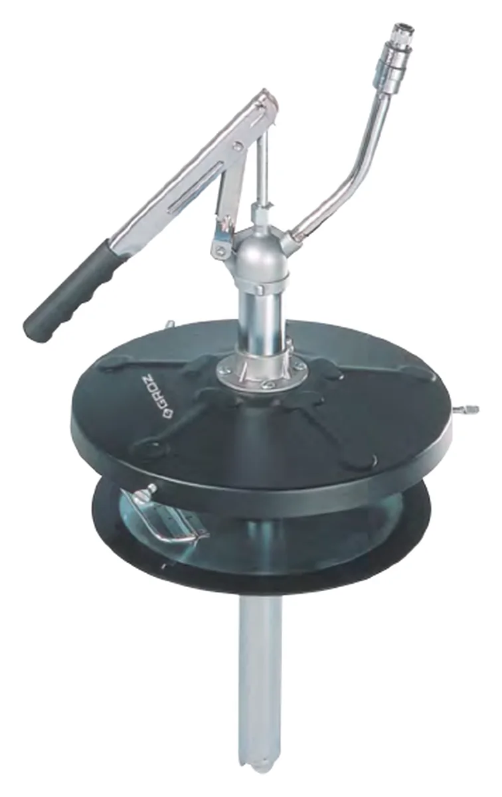

GROZ · Greasing Equipment
Grease Filler Pumps
CAT NR GFP/03-PRO · ORD NR 44211
| CAT NR (catalogue number) | GFP/03-PRO |
|---|---|
| ORD NR (order number) | 44211 |
| Box quantity | 10 |
| Drum cover diameter (inch) | 12 |
| Drum cover diameter (mm) | 310 |
| Female loader adaptor | American |
| Follower plate dimensions I.D. grommet (inch) | 1-1/2 |
| Follower plate dimensions I.D. grommet (mm) | 38 |
| Follower plate dimensions O.D. plate (inch) | 11-11/32 |
| Follower plate dimensions O.D. plate (mm) | 288 |
| Follower plate dimensions O.D. steel end (inch) | 9-1/2 |
| Follower plate dimensions O.D. steel end (mm) | 241 |
| Pail capacity | 20 kg / 25-50 lb / 5gal. |
| Pump length (inch) | 18 |
| Pump length (mm) | 457 |
| Type of follower plate | Rubber Lining |
Ask for a quote The catalogue PDF, page 121
“Ask for a quote” opens this product in the catalogue: add it to your quote and send it. Buyers from Africa, the Gulf and worldwide are welcome; prices in USD, EUR or INR.
From the GROZ Fluid Handling CC-07 catalogue. Not yet verified: these details were read from the printed catalogue automatically; check the catalogue page before ordering.